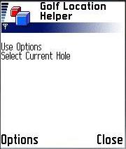
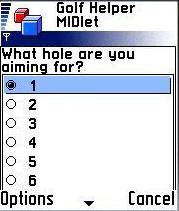
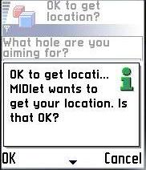
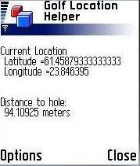
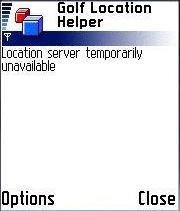
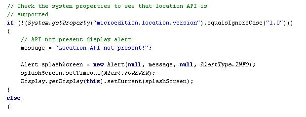
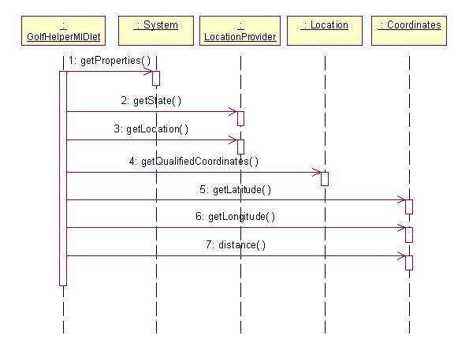
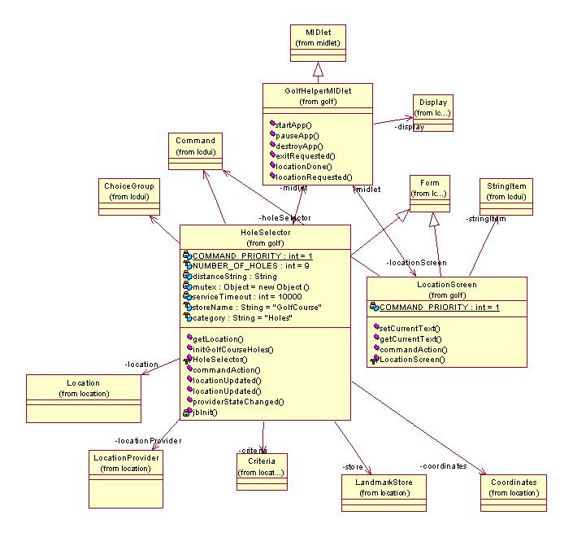

|
||||||||||
| PREV PACKAGE NEXT PACKAGE | FRAMES NO FRAMES | |||||||||
See:
Description
| Class Summary | |
| GolfHelperMIDlet | This class illustrates the implementation of a simple MIDlet to demonstrate the use of JSR-179 the location API. |
| HoleSelector | The HoleSelector class allows the user to select the current hole. |
| LocationScreen | The LocationScreen class displays a message on the screen. |
This example application demonstrates how to use JSR 179 to create a health and sports oriented MIDlet.
Section contents
5. Summary
This example application demonstrates how to use JSR 179 to create a sports and health related application that is used to obtain the distance to the current hole of a golf course. The MIDlet is intended as an introductory demonstration to show some of the features included in Location API.
You should be familiar with Java™ programming and the basics of Mobile Information Device Profile (MIDP) programming.
The example is built
using the standard method for Building and
running the examples. The
support for the Location API in an SDK may require the use of a file
containing
NMEA location data. Creating location data with proximity to the
locations in this example will make the results more realistic.
This example creates landmarks for a 9 hole golf course.
See the supporting documentation in your SDK for creating location
data.
Hole 1:
Longitude =
61.4580 Latitude =
23.8470
Hole 2: Longitude = 61.4585
Latitude
=
23.8475
Hole 3:
Longitude =
61.4587
Latitude
= 23.8477
Hole 4:
Longitude =
61.4589
Latitude = 23.8479
Hole 5:
Longitude =
61.4592
Latitude = 23.8482
Hole 6:
Longitude =
61.4595
Latitude = 23.8485
Hole 7:
Longitude =
61.4597
Latitude = 23.8487
Hole 8:
Longitude =
61.4599
Latitude =
23.8489
Hole 9:
Longitude =
61.4600
Latitude = 23.8495
When the application
begins operation there will be
prompts asking permission to create location information
(landmarks) in the phone.
When the application starts up, the following screen appears:

Figure: Initial display
The MIDlet starts and the user selects a hole by pressing the Options key and a pop up menu appears.
Figure: Select menu view
If the user selects the option the following hole selection screen appears.

Figure: Hole selection view
When the hole is
selected a permissions screen will appear asking permission to
determine the location, as shown below.

Figure: Top view
If the user selects ok a location result screen is displayed as shown below.

Figure:
Current
location and hole distance view
The user may use the
select option to select a different hole as the golf game
progresses.
If the simulation file
causes an out of service indication or the SDK preferences are set so
that the
location service are out of service then the user will see the
following
screen.

4.1 Checking for the Location API
The
first application operation a well designed MIDlet will perform is to
test the
system properties to ensure that the required API is present before
proceeding.


4.3 Class Diagram
The MIDlet class takes care of holding the display and providing transitions between the different screens. The MIDlet has two screens: HoleSelector, where the user selects the hole; LocationScreen, which contains the current location and distance to hole information. The figure below shows the class diagram. The diagram shows the MIDlet class, screen classes (inherit from Form), Location API classes and some utility classes.

Figure: Class diagram
The example has demonstrated how to use the the Location API within a health and sports oriented example MIDlet.
|
||||||||||
| PREV PACKAGE NEXT PACKAGE | FRAMES NO FRAMES | |||||||||